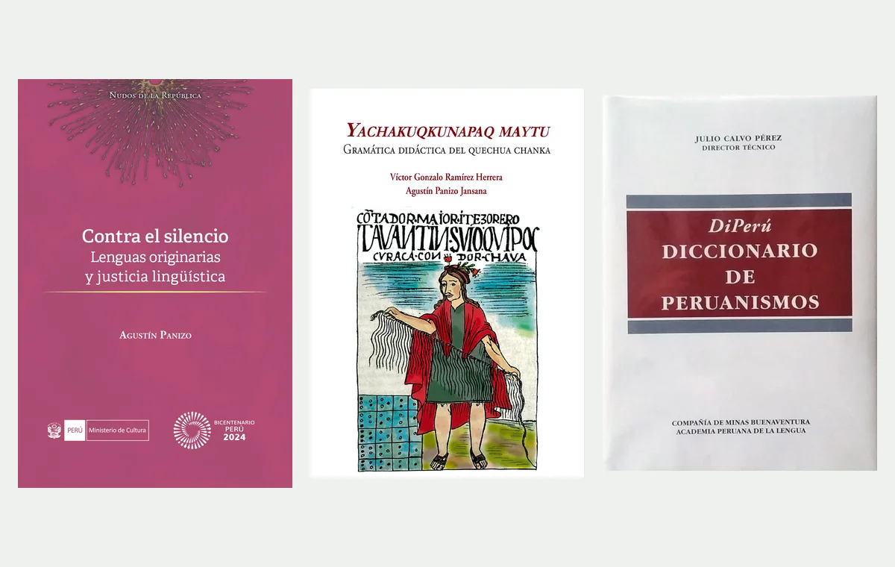
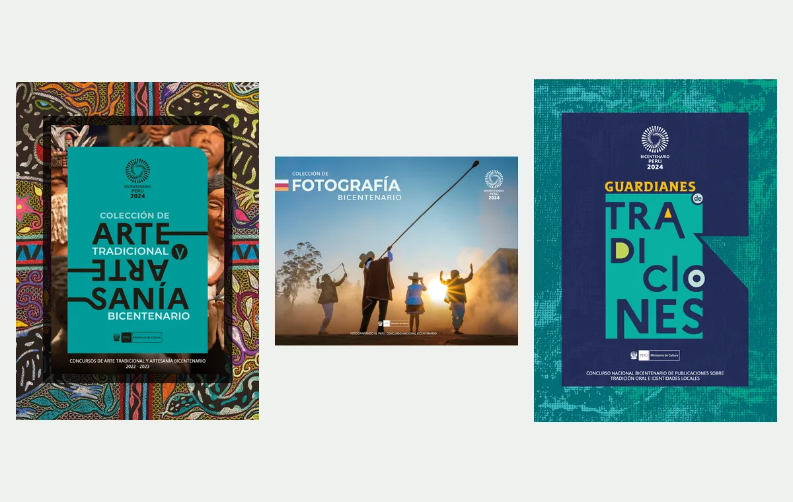

30+
Years working in linguistics
Research, lexicography, Indigenous languages, teaching, and language management.
Personal website
Linguist · Lexicographer · Editor · University Lecturer
Master’s degree in Hispanic Lexicography · University of León / School of Hispanic Lexicography
I work at the intersection of language, culture, publishing, and public policy.
I am a Peruvian linguist, lexicographer, editor, and university lecturer. My work focuses on Indigenous languages, especially Quechua, as well as lexicography, language policy, language revitalization, and editorial production.
Peruvian linguist, lexicographer, editor, and university lecturer.
30+
Research, lexicography, Indigenous languages, teaching, and language management.
2015–2020
Head of Peru's Directorate of Indigenous Languages.
2022–present
Courses and workshops on Indigenous languages, language policy, and lexicography.
1994–present
Editorial work, publications, and outreach on surf culture and coastal heritage.
Selected work

Publications
Authorship, co-authorship, and participation in lexicographic projects.

Editorial direction
Editorial direction of Tubos and K4, along with other publishing projects.

Editorial coordination
A selection of publications produced under my editorial coordination.
Areas of work
Dictionaries, lexicographic resources, and digital tools.
Documentation, revitalization, language rights, and education.
Public policy, language planning, and language rights.
Editing, proofreading, and editorial support for academic, technical, outreach, and literary texts.
Writing and editing on Peruvian surfing history, coastal heritage, and surf-break conservation.
Publications
Academic and lexicographic publications, editorial work, and public outreach on surf, maritime culture, and coastal heritage.
View publicationsEditorial work
A selection of editorial coordination, editing, style correction, linguistic review, and editorial and literary support projects.
View editorial workTeaching
University teaching and specialized training in Indigenous languages, lexicography, language policy, and revitalization.
View teaching experience